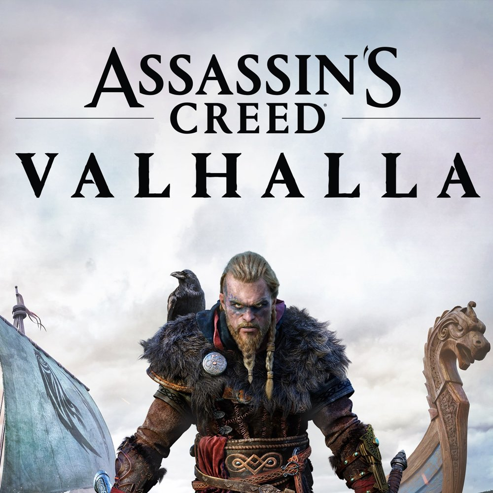
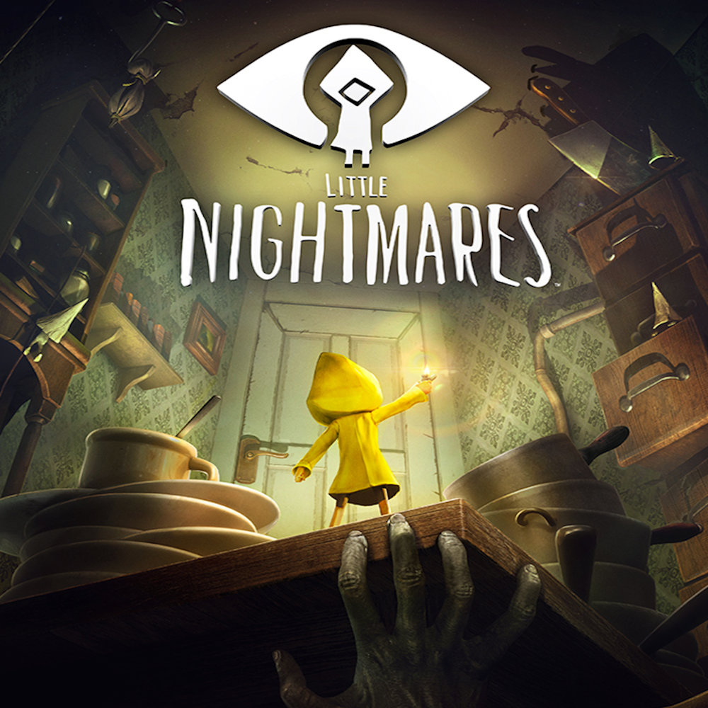

Game Trust
Featured Games

Uncharted 4: A Thief's End
The story follows Nathan Drake, a now retired treasure hunter, now reunited with his long lost brother Samuel. He must save his brother from a tyrant by seeking Captain Henry Avery's legendary fabled pirate treasure.
Genre: Action-adventure, third-person shooter
Developer: Naughty Dog
Publisher: Sony Interactive Entertainment
ESRB Rating: T for Teen for violence, blood, language, suggestive themes, and tobacco Use
For more information, see ESRB Ratings.

Tomb Raider
Follows Laura Croft on her first adventure. This is her origin story. As her ship wrecks she starts off as a scared adventurer and becomes a hardened survivor trying to survive a forgotten island. Laura will face many trials and dangers.
Genre: Action-adventure
Developer: Crystal Dynamics, Feral Interactive
Publisher: Square Enix, Feral Interactive
ESRB Rating: M for Mature for blood, gore, intense violence, and strong language.
For more information, see ESRB Ratings.

The Witcher 3: Wild Hunt
Witcher 3 is based on Slavonic Mythology. The player plays as Geralt of Rivia who is a witcher for hire to slay monsters while also searching for his adopted daughter that is in danger.
Genre: Action role-playing
Developer: CD Projekt, CD Projekt RED
Publisher: CD Projekt
ESRB Rating: M for Mature for blood and gore, intense violence, nudity, strong language ,strong sexual content, use of alcohol
For more information, see ESRB Ratings.

.png)
Assassin's Creed Valhalla
Assassin's Creed takes place partly in the 21st Century and the years 872-878 AD. It follows modern day Layla Hassan, an assassin, who relives the memories of a viking named Eivor to save the world from destruction.
Genre: Action-adventure
Developer: Ubisoft Montreal, Ubisoft San Francisco
Publisher: Ubisoft, Ubisoft San Francisco
ESRB Rating: M for Mature for blood, gore, intense violence, partial nudity, sexual themes, strong language, use of drugs and alcohol
For more information, see ESRB Ratings.

Control
Control is a story about Jesse Faden. She is caught in the middle of a deadly conflict between a secret government agency and otherworldly forces that are invading and corrupting reality.
Genre: Action-adventure, third-person shooter
Developer: Remedy Entertainment
Publisher: 505 Games
ESRB Rating: M for Mature for blood, violence, and strong language
For more information, see ESRB Ratings.

Little Nightmares
Following six, a hungry little girl who has to escape the Maw, a hungry vessel that is inhabited by monstrous, twisted beings.
Genre: puzzle-platform horror adventure game
Developer: Tarsier Studios, Supermassive Games, Engine Software
Publisher: BANDAI NAMCO, Namco Bandai Games America Inc.
ESRB Rating: T for Teen for blood and violence
For more information, see ESRB Ratings.

The Medium
Medium follows Marianne, a medium that is able to communicate with the dead. She navigates both spirit world and an abandoned Soviet-era resort in Poland. Marianne will travel to the spirit world to not only help move on the dead, but to avoid monsters and solve puzzles.
Genre:Puzzle, Psychological horror, Survival horror, Speculative fiction, Societal
Developer: Bloober Team
Publisher: Bloober Team, NA PUBLISHING INC.
ESRB Rating: M for Mature for strong language, blood, and intense violence
For more information, see IGN.

Dishonored 2
The story follows Emily, who is about to become Empress when suddenly otherwordly beings take over. Emily becomes a supernatural assassin to reclaim her throne
Genre: Action-adventure, Stealth
Developer: Arkane Studios
Publisher: Bethesda Softworks
ESRB Rating: M for Mature for blood, gore, intense violence, strong language, and suggestive themes.
For more information, see ESRB Ratings.